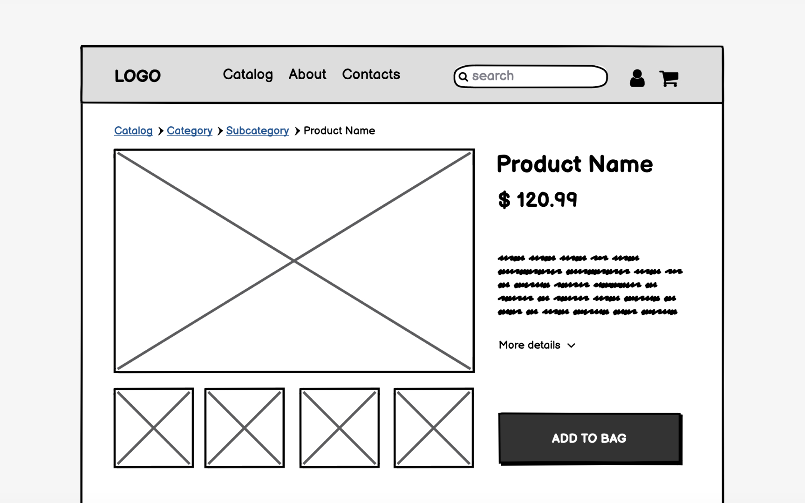

Plan de Sitio: Impresiones 3D Personalizadas
Site Name
Nombre: Impresiones 3D Bolivia
Elegí este nombre porque comunica claramente que el servicio está centrado en impresión 3D personalizada dentro de Bolivia, y es fácil de recordar.
Site Purpose
El propósito de este sitio web es ofrecer servicios de impresión 3D personalizados. Los usuarios podrán:
- Ver productos listos para imprimir o comprar directamente.
- Solicitar cotizaciones para piezas personalizadas subiendo su archivo 3D (como .stl).
- Contactar directamente con la empresa mediante un formulario.
- Conocer más sobre los materiales, procesos y valores de la empresa.
Scenarios
- ¿Cómo puedo subir mi diseño personalizado para solicitar una cotización?
- ¿Qué materiales usan para imprimir los productos?
- ¿Dónde puedo ver ejemplos de trabajos anteriores?
- ¿Cómo contacto a la empresa si tengo una urgencia?
Color Schema
Colores seleccionados para el sitio:
- Azul (#3498db): Color principal para títulos, botones y navegación.
- Naranja (#e67e22): Color de acento para resaltar botones secundarios y llamadas a la acción.
Azul Principal
Naranja Acento
Typography
- Roboto: Fuente para el cuerpo del texto y párrafos.
- Oswald: Fuente para títulos y encabezados.
Wireframes
Diseño del sitio web (inicio) para dispositivos móviles y escritorio:
Mobile View

Desktop View
